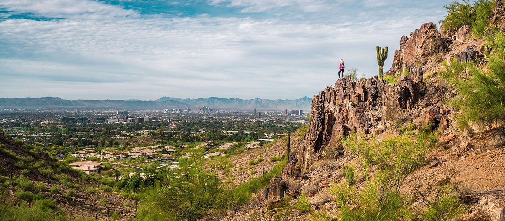

Shea-Tatum Corridor Real Estate: Desert Living Near the Phoenix Mountain Preserve
Welcome to Shea-Tatum / Phoenix Mountain Preserve
A desert retreat bordering the Phoenix Mountain PreserveWhat to Love
- Direct access to nearly 5,000 acres of preserve trails
- Quiet, established streets with mature landscaping
- 10 to 25 minutes from Scottsdale, Phoenix, and the airport
- A more attainable alternative to neighboring Paradise Valley
What is the Shea-Tatum corridor known for?
The area surrounding Shea Boulevard and Tatum Boulevard sits against the eastern edge of the Phoenix Mountain Preserve, combining natural desert scenery with established neighborhoods. While the area is technically within the City of Phoenix, it feels more like an extension of Paradise Valley and Central Scottsdale than a typical Phoenix neighborhood.
The defining feature is direct access to the Phoenix Mountain Preserve, a nearly 5,000-acre protected desert park with dozens of miles of hiking, mountain biking, and equestrian trails. Many neighborhoods back directly to the preserve, giving residents mountain views and immediate desert access.
How far is the Shea-Tatum corridor from Scottsdale and Phoenix?
The Shea-Tatum corridor is technically part of the City of Phoenix, but it borders both Paradise Valley and Scottsdale, and sits just minutes from Downtown Phoenix and Sky Harbor International Airport — a desirable, convenient location with mountain views on every side.
| Destination | Typical Drive Time |
|---|---|
| Kierland Commons / Scottsdale Quarter | 10–15 minutes |
| Old Town Scottsdale | 15–20 minutes |
| Downtown Phoenix | 20–25 minutes |
| Phoenix Sky Harbor International Airport | 20–25 minutes |
The area also has quick access to both SR-51 and Loop 101, which supports commuting throughout the Valley without relying on surface streets. [VERIFY current drive times against real-time traffic]
What do homes in the Shea-Tatum corridor look like?
Neighborhoods here are made up of mature, established subdivisions with wide, tree-lined streets, mature desert landscaping, and a mix of custom homes alongside well-maintained ranch properties. Most homes sit on quarter- to half-acre lots, with some custom properties on larger parcels.
What outdoor amenities are near the Shea-Tatum corridor?
Popular nearby trailheads include Dreamy Draw Recreation Area, the 40th Street Trailhead, Quartz Ridge Trail, Trail 100, and connections to Shaw Butte and North Mountain. The interconnected trail system makes it possible to hike, trail run, or mountain bike without leaving the neighborhood.
What resort, dining, and golf options are nearby?
The Hilton Phoenix Tapatio Cliffs Resort (formerly the Pointe Hilton Tapatio Cliffs Resort) [VERIFY current resort branding] sits at the edge of the preserve and is home to Different Pointe of View, a AAA Four Diamond restaurant perched roughly 1,800 feet above the Valley with skyline views, along with an on-site spa.
The resort's Lookout Mountain Golf Club, a Bill Johnston-designed par-71 public course, winds through desert terrain with dramatic elevation changes and is open to residents and visiting golfers alike. [VERIFY current green fees]
What schools serve the Shea-Tatum corridor?
School district varies by side of the corridor. On the east side, homes typically fall within Scottsdale Unified School District, feeding into Cherokee Elementary, Cocopah Elementary/Middle School, and Chaparral High School. West of 40th Street, homes typically fall within Paradise Valley Unified School District, feeding into Mercury Mine Elementary, Shea Middle School, and Shadow Mountain High School. Several charter and private school options are also within a short drive. [VERIFY current school boundaries for a specific address]
What should buyers know before purchasing in the Shea-Tatum corridor?
Because the area is technically part of the City of Phoenix rather than Scottsdale or Paradise Valley, buyers should confirm applicable zoning, permitting, and tax jurisdiction details with the city before purchasing, even though the lifestyle and setting closely resemble neighboring Paradise Valley. [VERIFY jurisdiction-specific details]
Why do buyers compare the Shea-Tatum corridor to Paradise Valley?
One of the area's advantages is its location immediately adjacent to Paradise Valley. Residents enjoy many of the same benefits — mountain views, a quiet residential setting, and proximity to luxury resorts, dining, and golf — often at a more attainable entry point than Paradise Valley proper.
It's common for buyers who begin a search in Paradise Valley or Central Scottsdale to discover the Shea-Tatum corridor and find it offers comparable mountain access and lot sizes without the same price floor.
What is the day-to-day feel of the Shea-Tatum corridor?
The corridor is made up of quiet, established subdivisions rather than a single master-planned community, so residents often describe the area as feeling removed from the city even though most destinations are within a 20-minute drive. Wide streets, minimal through traffic, and direct preserve access are the most frequently cited reasons buyers choose the area.

Common Questions
Is the Shea-Tatum corridor part of Scottsdale or Phoenix?
The Shea-Tatum corridor is technically within the City of Phoenix, though its setting, mountain access, and proximity to Paradise Valley and Central Scottsdale give it a similar feel to those neighboring luxury markets.
How far is the Shea-Tatum corridor from Old Town Scottsdale?
Old Town Scottsdale is typically a 15- to 20-minute drive from the Shea-Tatum corridor, with Kierland Commons and Scottsdale Quarter closer at 10 to 15 minutes.
What is the Phoenix Mountain Preserve?
The Phoenix Mountain Preserve is a nearly 5,000-acre protected desert park bordering the Shea-Tatum corridor, offering dozens of miles of hiking, mountain biking, and equestrian trails accessible directly from many neighborhoods in the area.
What are typical lot sizes in the Shea-Tatum corridor?
Most homes in the area sit on quarter- to half-acre lots, with some custom properties available on larger parcels.
Is there a resort near the Shea-Tatum corridor?
Yes. The Hilton Phoenix Tapatio Cliffs Resort sits at the edge of the Phoenix Mountain Preserve nearby, with the AAA Four Diamond restaurant Different Pointe of View and the public Lookout Mountain Golf Club on-site. [VERIFY current resort branding]


Considering a Move to Shea-Tatum / Phoenix Mountain Preserve?
Call 480-734-0870 or email laura@laurajorden.com for current listings and market data.
Contact Laura